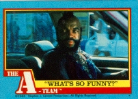

Mr. T
Actor
filmography
Spy Hard (1996)
(uncredited) .... Helicopter Pilot (cameo)
Freaked (1994)
.... The Bearded Lady
... aka
Hideous Mutant Freekz (1994)
Magic of the Golden Bear: Goldy III, The (1994)
.... Freedom
"T. and T." (1987)
TV Series
.... T.S. Turner
Be Somebody or Be Somebody's Fool! (1984) (V)
.... Mr. T
Toughest Man in the World, The (1984) (TV)
.... Bruise Brubaker
"A-Team, The" (1983)
TV Series
.... Sgt. Bosco "B.A." Baracus
D.C. Cab (1983)
.... Samson
... aka
Street Fleet (1983)
Penitentiary II (1982)
Rocky III (1982)
.... Clubber Lang
Notable TV Guest Appearances
"Suddenly Susan" (1996)
, as himself (5/8/1997)
"Suddenly Susan" (1996)
, as Arnie, gives Jack a massage (10/1996)
"Blossom" (1991)
, as himself
"Silver Spoons" (1982)
, as Rick's bodyguard

Back to Mr. T's K-Rad Homepage!
Cult of the Dead Cow - Index